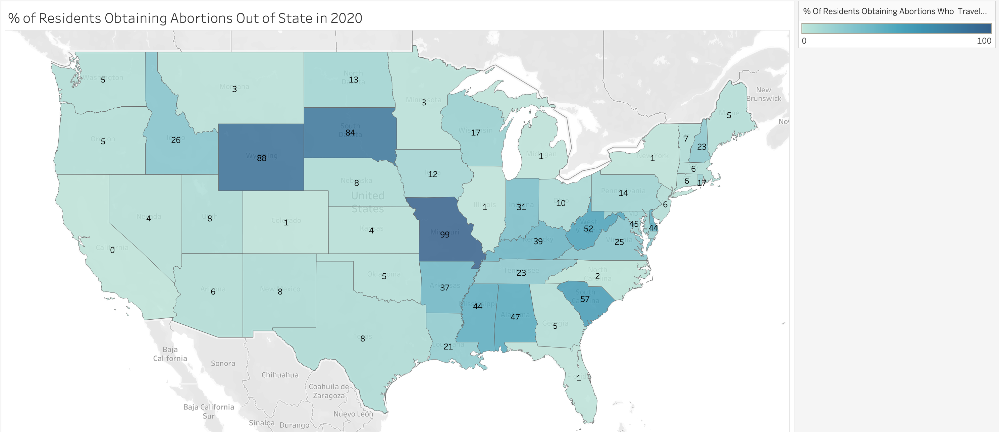
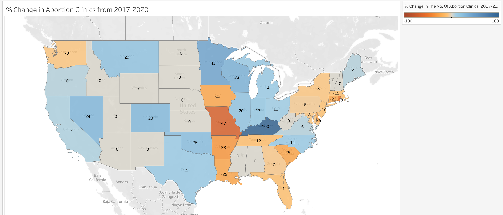
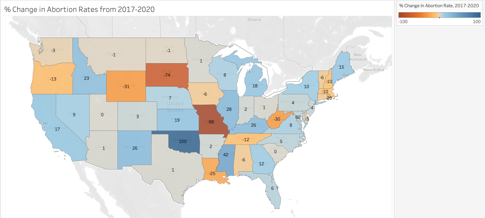

Proposition: Increasing access to abortion clinics in states increases the amount of abortions that happen. Likewise, decreasing access to abortion clinics in states decreases the amount of abortions that happen.
FOR the Proposition
Design Decisions and Rationale:
- Trendline: Trendlines immediately jump out to the viewer and make them see a trend without having to do any work. If the line looks like it makes sense, they will not try to calculate it to make sure that it is actually representative of the data. Therefore, I wanted to further increase the slope in the positive direction to support the proposition and have a stronger visual effect. However, since Tableau would not let me adjust the slope calculation, I found a work around (see next bullet point). Deception Score: -.5. Since the trendline is accurate, I was originally going to score it a 2. However, my intention is to make the viewers just rely on their visual instincts without further investigating the presented data so I would say that the line leans towards deceptive.
- Axis Dimensions: In order to create a larger visual effect of data points being in the upper right quadrant, I decided to shrink the X-axis. Both the Y and X axis' range are from -100 to 100 so viewers who are quickly looking may think they are proportionate. But in fact, the X-axis is slightly smaller so the data looks more condensed. Even if viewers look at the gridlines, I only changed the proportion enough so that it isn't immediately obvious that the Y-axis is slightly longer. This is similar to the effect we saw in lecture: If 2 identical visuals only slightly vary from each other, viewers will take longer and have more difficulty discerning the difference than if the differences were larger. Deception Score: -2.
- Colors: I used 3-step coloring to highlight the '% change in the number of abortion clinics, 2017-2020.' I chose red because it grabs the viewers attention. Since it is a gradient, pink to dark red, viewers will naturally move their eyes in that direction (in this case upwards) which will make them further believe the proposition. Further, if you look at the visual for a longer time, the pink circles will fade compared to the darkly colored circles, which will create the illusion that all of the data is in the top half of the graph. Deception score: -1.
- Scatter Plot Graph: This graph is very intuitive for users to understand. Granted the data itself is not deceptive, the presentation is very straightforward. Many viewers will feel comfortable looking at this chart and so would trust what is presented to them and their intuition. Deception Score: 2.
AGAINST the Proposition
Visual 1

Visual 2

Visual 3
-
Completed legend title:
- Visual 1: "% Change In The No. Of Abortion Clinics, 2017-2020."
- Visual 2:% "Of Residents Obtaining Abortions Who Traveled Out Of State For Care, 2020."
Design Decisions and Rationale:
- Map Graph: I chose to use a map since all of my data was pertaining to each state and it is easy to visualize in this format. Viewers can easily see the data for each state and notice trends across different regions. Deception Score: 2.
- Colors: I chose to use orange to blue as my scale where orange represented negative values, and blue represented positive values. Since orange and blue are complimentary colors they are easy to differentiate and point out the disparity in values between states. In Visual 1, the dark blues draw the viewers attention and force the viewers to take interest in this region. Then when they look at Visual 2, they naturally will be drawn to the strong orange, but also because it is in a region of significance based on Visual 1. The same pattern follows for Visual 3. The choice of using color in this way primes the viewer to look at what I want them to and keep it in mind for the rest of their analysis. Using grey makes users ignores states that aren't relevant. Deceptive Score: -1.
- 3 Different Graphs: Initially I planned to use a mix of different graph types, but realized that the consistency of the same graph type, in this case, would be more powerful. Viewers know what to expect in each visual and so will seamlessly transition between visuals. Ideally I could have overlapped the visuals or had a button that would allow users to switch the metrics, but this method of stacking visuals and scrolling between them still works. A benefit of this method is that it can be difficult for users to compare each state 1 to 1 as they have to look back and forth. This gives me, the designer, the benefit of generalizing groups of states without the user being able to equally notice any oversight in my analysis. Deception Score: -.5.
Final Reflection
While I was able to design visualizations that strongly supported or rejected the proposition, as the designer, it was quite difficult to create visualizations from the same dataset that would draw opposite conclusions. Besides tampering with the data, changing values or excluding values, I wanted to challenge myself to creatively be ~deceptive~. I realized the best way to do this would be to try and minimally change features so that it would only subconsciously guide the viewer's opinions and how they analyzed my visualizations. Something that surprised me was how I would sometimes mislead myself by not checking the default color scale that Tableau would set. While comparing two different data groups, I would miss that the range of values were not equivalent which would misguide my interpretation of the values. After this assignment, I now define ethical analysis and visualizations if they do not have any misleading features or tampering with the data. Since it is very difficult to remove any biases, I think ethical analysis is when the designer addresses any potential biases they might have and provides contexts that both support or challenge their design (as there is likely multiple sides to each dataset story). This feels the most transparent and ethical because it provides the most context to viewers to make the most informed interpretations. Going forward I will try to analyze visualizations by looking at all the key elements: title, axis titles and values, legends, data visualization choice, and then annotations. These will likely contain any misleading features. If the actual dataset has been manipulated it will be much harder to tell that the visualization is misleading. Acceptable persuasive choices would depend on the context and what the goal of the designer is. For example, I think that Simon Scarr's "Iraq's Bloody Toll" necessitates strong, visceral graphics because of how important and dark the subject is. I don't think it would be appropriate to create persuasive visuals when the intention is to mislead people at their own detriment (aka: spreading false covid information). Challenges with the dataset:
- One challenge with data regarding abortions is that there is a lot of estimations that happen. Since there are states that strongly oppose women having abortions or make it very difficult to access, many women have to find alternative ways to get the care they need. This means they may not report that they have gone through an abortion which causes the data to be an underestimation of how many abortions really happen.
- Any data pertaining to 2014 uses the language "abortion provider", whereas any data regarding 2017 onwards uses "abortion clinics." My intuition is that this dataset might have used different language when collecting this information from the different years/ different sources but I could also interpret the different wording to mean that the clinics represent facilites and providers represent doctors.
- It is hard to make comparisons across 2014-2020 and there is data just for 2014-2017, but not and equivalent dateset fo 2017-2020. This made it difficult to explore some of the data and the comparisons I wanted to.
- The metadata is not very clear. There are many notes but they do not explicitly explain to which dataset they are referring to, or whether they are meant to be general notes. It would have been helpful if the metadata explained which data sources provided which information. THis would have made it very easy for me to look up the exact source I need to address any questions I have instead of having to dig through 8 different sources.